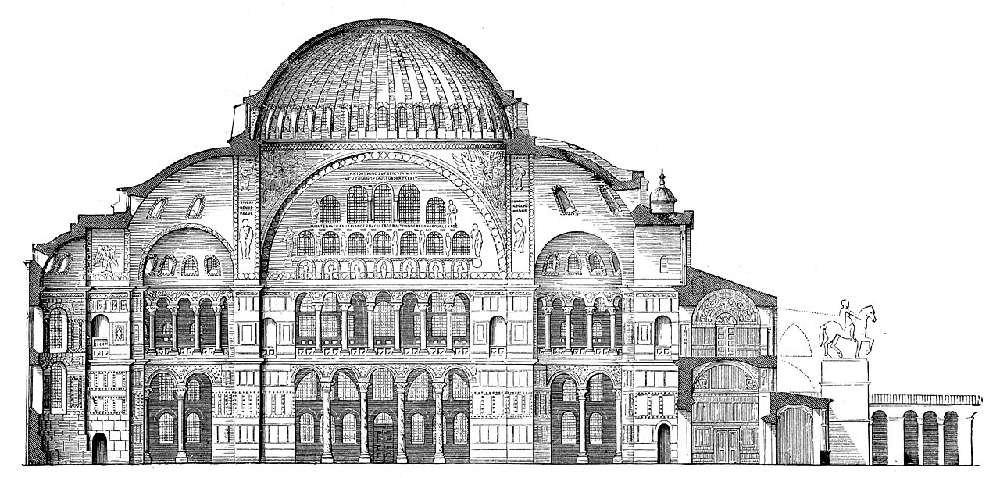

How do you build a space that feels like heaven on earth, and fill it with figures that seem to belong to eternity rather than to this world?
After Rome’s western empire fell, its eastern half lived on for a thousand years as the Christian Byzantine Empire. Its art turned away from Greek naturalism toward something different on purpose: flat, golden, and otherworldly, built to lift the mind to God.
🎯 BY THE END OF THIS LESSON YOU WILL BE ABLE TO…
1
I will be able to explain how Hagia Sophia’s dome and pendentives create a sense of floating space.
2
I will be able to describe the style and purpose of Byzantine mosaics and icons.
3
I will be able to explain why Byzantine art chose flatness and gold over naturalism.
📋 WHAT YOU NEED FOR THIS LESSON
▶
A notebook or an open Word document for the “Now You Try” near the end of this lesson
▶
Your memory of the Roman arch and dome from Unit 5, and the mosaic from Lesson 5.03
📚 PART 1 · LOOK FIRST~12 MIN
👀 LOOK CLOSELY · FIND THE DOME, THEN THE GOLD
Look at the great building, then at the golden mosaic. The church is crowned by an enormous dome; the mosaic glows with gold and shows still, frontal figures. Neither tries to look like everyday life. What feeling do you think the makers wanted, and how does each choice serve it?
Hagia Sophia, Constantinople (Istanbul), 532–537 CE. Photograph by Arild Vågen, licensed CC BY-SA 3.0, via Wikimedia Commons.
Emperor Justinian and his attendants, San Vitale, Ravenna, Italy, c. 547 CE. Faithful reproduction of a public-domain mosaic (The Yorck Project). Public domain.
Hagia Sophia (“Holy Wisdom”) was built in just five years for the emperor Justinian. Its vast central dome seems to float, because a ring of windows around its base floods the rim with light, so the heavy dome looks as if it hangs from heaven. The dome rests on four curved triangles called pendentives, which carry a round dome smoothly down onto a square room, a Byzantine engineering breakthrough.
Inside, Byzantine churches glowed with mosaics set against backgrounds of gold. As at San Vitale in Ravenna, the figures are flat, frontal, and solemn, floating on a shimmering gold ground rather than standing in a real place. This was a deliberate choice. Byzantine artists were not failing at naturalism; they were rejecting it, to show a holy realm beyond the physical world.
📚 PART 2 · THE FLOATING DOME & THE GOLD GROUND~16 MIN
The pendentive solved an old problem. A dome is round; a room is usually square. How do you set one on the other? Byzantine builders filled each upper corner of the square with a curved triangle. Together the four pendentives form a continuous circle at the top to carry the dome, while their points come down onto the four corners below.

Hagia Sophia, cross-section, reconstruction drawing, 1908. Public domain. Retrieved from Wikimedia Commons. The round dome sits on the great arches of a square room; the curved triangles between the arches are the pendentives, and the ring of windows at the dome’s base makes it seem to float.
💬 QUICK CHECK-IN · NO WRONG ANSWER
Byzantine figures are flat and set on plain gold, not in a real landscape. Why might artists choose to leave out depth and setting?
📚 PART 3 · WATCH IT WORK~15 MIN
🔍 ARTWORK SPOTLIGHT
Hagia Sophia (532–537 CE)
Constantinople (Istanbul)
Describe: A massive building is crowned by a wide, shallow dome, with smaller half-domes stepping down around it and tall windows piercing the walls and the dome’s base.
Analyze: The dome rests on pendentives over a square core, and the ring of windows at its base floods it with light, so the heavy form reads as weightless. Interior gold mosaics multiply that light into space that feels boundless.
Interpret: Light and the floating dome were meant to feel divine, as if the roof opened to heaven. One reading is that the whole building is an argument that God’s wisdom is vast, luminous, and beyond human weight.
Judge: It succeeds so powerfully that a visitor reportedly cried that Justinian had outdone Solomon. For a thousand years it was the largest enclosed space in the world, and it still stuns.
✅ CHECK YOUR UNDERSTANDING
The curved triangles that let a round dome sit on a square room are called…
Byzantine artists set figures on plain gold backgrounds mainly to…
⚠️ WORTH KNOWING · AI & “BAD” VERSUS DIFFERENT
Ask an AI to “improve” a Byzantine icon and it may make it more lifelike, treating flatness as a flaw to fix. That misses the point entirely: the flatness is the meaning. AI tends to push toward whatever is most common in its training, often modern realism. It cannot tell a deliberate sacred style from a mistake. Judging a work by its own goals, not a default, is the historian’s job.
📖 VOCABULARY FROM THIS LESSON
Byzantine
The Christian Eastern Roman Empire and its art, centered on Constantinople.
Dome
A rounded vault forming a roof; Hagia Sophia’s seems to float on light.
Pendentive
A curved triangle that carries a round dome down onto a square base.
Icon
A holy image of a sacred figure, painted flat and frontal for devotion.
Gold ground
A plain gold background in mosaic or icon, suggesting divine, timeless light.
✏️ NOW YOU TRY · IN YOUR NOTEBOOK
In three sentences, explain how Byzantine art uses flatness and gold to express the sacred, instead of the naturalism the Greeks prized. Point to one feature in the images above. You are practicing the form-to-belief reasoning you will use in the Byzantine vs. Gothic comparison later this unit.
➡️ WHAT YOU’LL DO NEXT
1
Lesson 6.02 · Pattern as Prayer: Islamic Art
You will see how Islamic art turned geometry, calligraphy, and pattern into sacred beauty.
2
Hagia Sophia or Chartres Analysis (assignment)
You may choose Hagia Sophia for your four-step analysis; the Gothic option comes in Lesson 6.03.
💪 WHY THIS MATTERS
Byzantine art teaches a lesson that runs through the rest of this course: realism is not the only goal of art, and not always the highest. A culture that wanted to picture eternity chose gold and stillness over flesh and depth, on purpose. Learning to respect that choice on its own terms is what separates an art historian from a casual viewer.
Optima Academy Online · ART HISTORY & CRITICISM · Semester 1 · Student Lesson Page
Lesson 6.01 · Heaven in Gold: Byzantine Art & Hagia Sophia